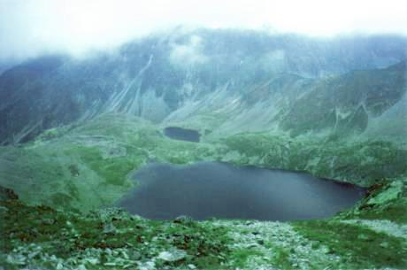
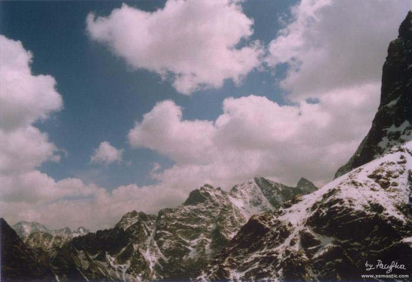
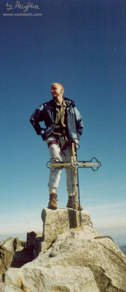
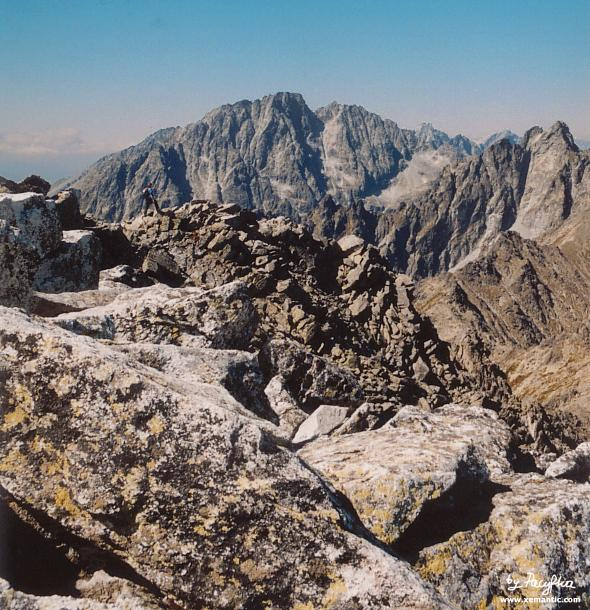

| "Widziałem w dole cichych wód lazury..." Widok z Mięguszowieckiej Przełęczy pod Chłopkiem na Hińczowe Stawy fot. Sivy |
 |
| 
Żabi, Rysy, Wysoka fot. Pacyfka |
| Jerzy Żuławski (1874-1915)
Na Gierlachu Głazy mając pod stopą, a nad głową chmurę,
Wyżej, wyżej! ponad to obłocze ponure,
Mgłę przebrnąłem... krok jeden! Szczyt! Ha! Ziemska gleba
i choć chmury-m zostawił na dole, nad mą głową
|
 "Głazy mając pod stopą, a nad głową chmurę..." Sivy na Gerlachu, fot. Pacyfka |
| "...piramidy, która z Bożej kielni
wzrosła, gdy jeszcze byli Jego snem śmiertelni..." Gerlach widziany ze Sławkowskiego fot. Pacyfka |
 |